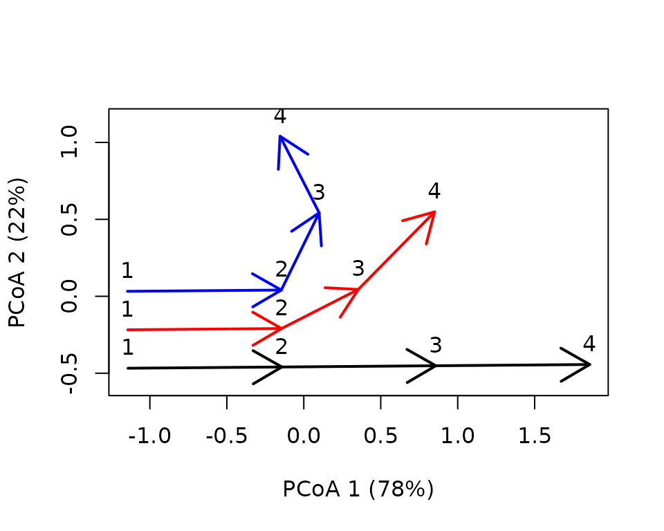
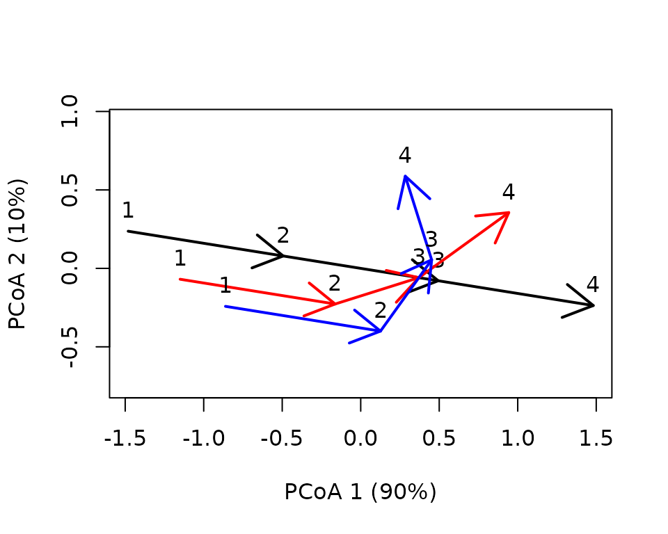
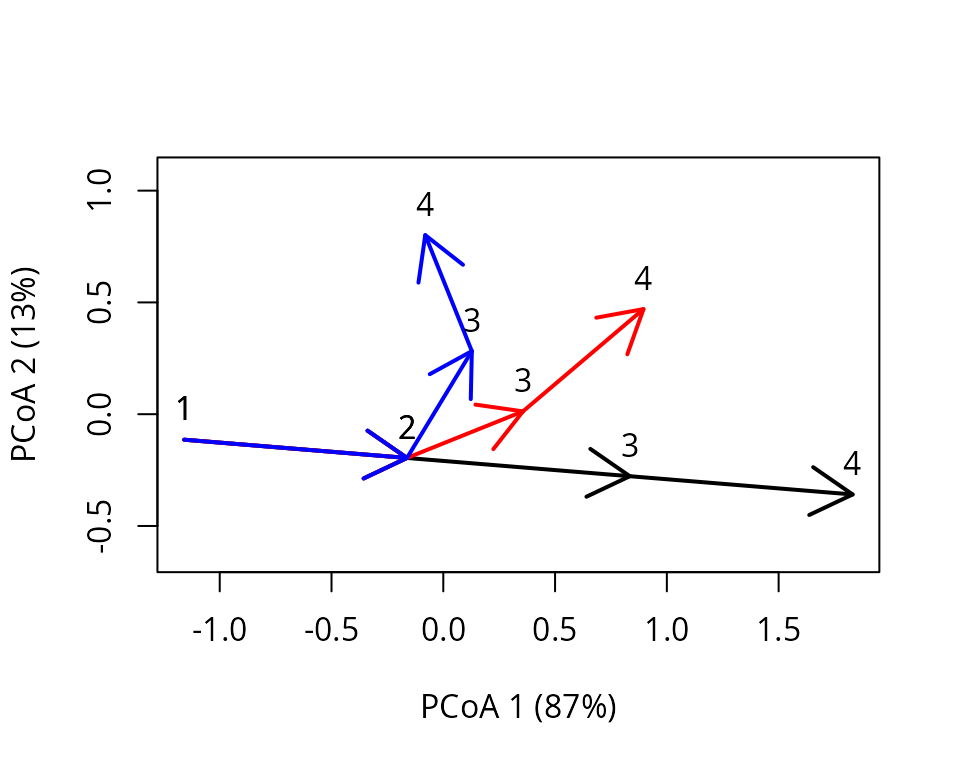
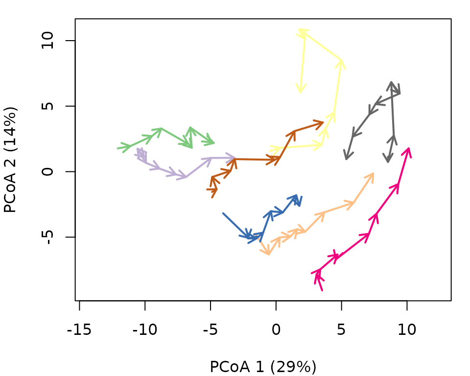
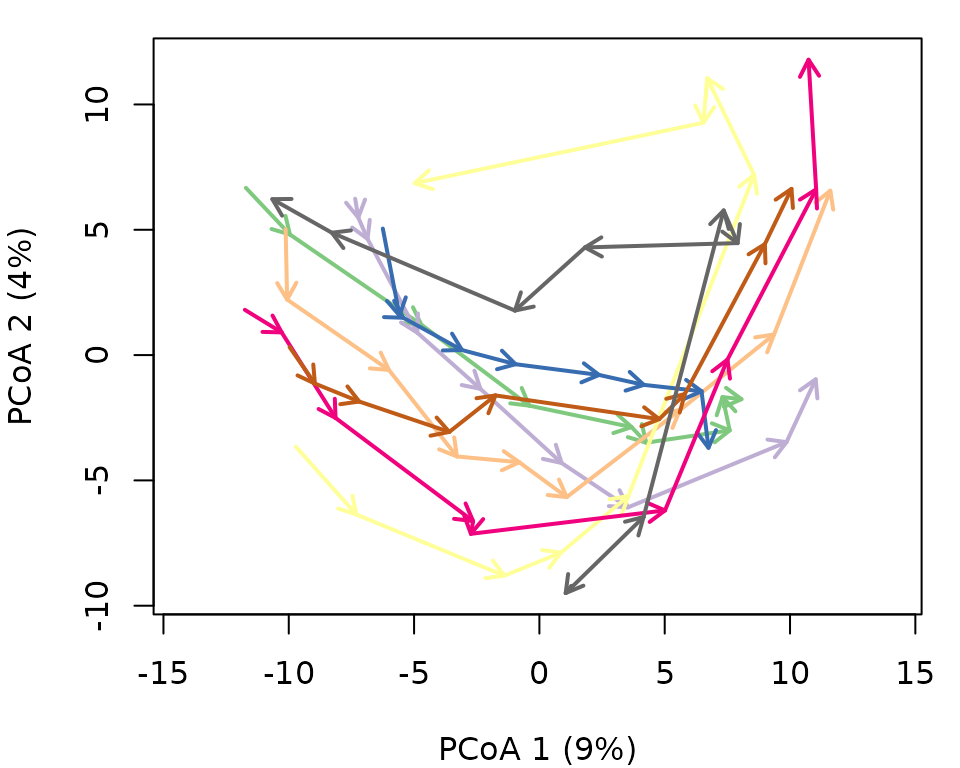
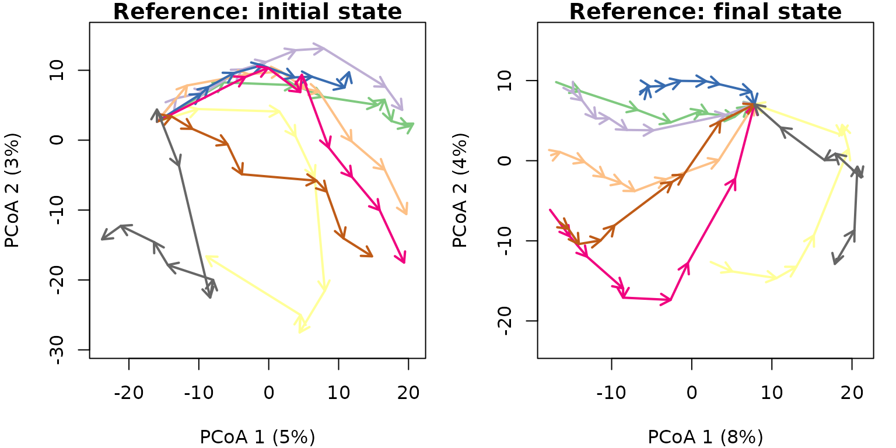
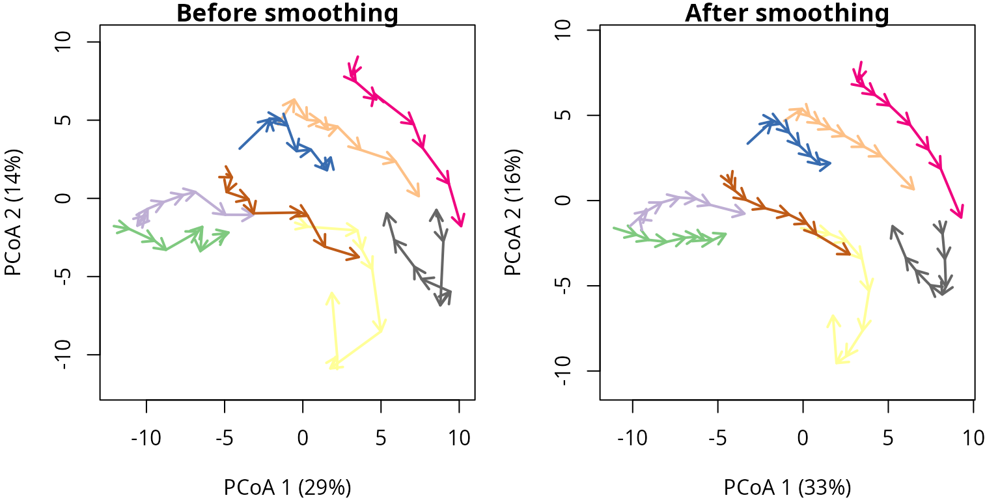

Transforming trajectories
Miquel De Cáceres / Nicolas Djeghri
2025-01-31
Source:vignettes/TransformingTrajectories.Rmd
TransformingTrajectories.Rmd1. Introduction
In this vignette you will learn to transform trajectory data in two different ways. By transforming, we mean modifying the distance matrix that represents the resemblance between ecosystem states. This is equivalent to (implicitly) modifying the coordinates (position) of ecosystem states in the space.
First of all, we load ecotraj:
## Loading required package: Rcpp2. Centering trajectories
2.1 What is trajectory centering?
Trajectory centering removes differences in (e.g. initial or overall)
position between trajectories, without changing their shape, to
focus on the direction of temporal changes. It is done using function
centerTrajectories(). Trajectory centering will normally
imply subtracting the coordinate values of the trajectory centroid from
the states conforming each trajectory. However, one may decide that the
original trajectory centers do not correspond to the centroid, but to a
specific subset of states, for example the state corresponding to the
first or last observation. In this cases, trajectories are shifted with
respect to particular reference states. Trajectory centering is useful
in cases where one wants to focus on spatio-temporal interaction while
discarding spatial patterns that are constant in time. It can also be
useful when trajectories are defined as subtrajectories of a trajectory
with cyclical patterns.
2.2 Simple centering example
We will employ the same simple example used in the introduction to trajectory analysis. Let us first define the vectors that describe the state of each site:
sites = c("1","1","1","1","2","2","2","2","3","3","3","3")We do not define surveys, so that they are assumed to be
consecutive for the each site. However, we do define a matrix whose
coordinates correspond to the set of ecosystem states observed. We
assume that the ecosystem space
has two dimensions:
xy<-matrix(0, nrow=12, ncol=2)
xy[2,2]<-1
xy[3,2]<-2
xy[4,2]<-3
xy[5:6,2] <- xy[1:2,2]
xy[7,2]<-1.5
xy[8,2]<-2.0
xy[5:6,1] <- 0.25
xy[7,1]<-0.5
xy[8,1]<-1.0
xy[9:10,1] <- xy[5:6,1]+0.25
xy[11,1] <- 1.0
xy[12,1] <-1.5
xy[9:10,2] <- xy[5:6,2]
xy[11:12,2]<-c(1.25,1.0)We define trajectories using:
D <- dist(xy)
x <- defineTrajectories(D, sites)The trajectories can be displayed using a PCoA on the distance matrix as follows:
trajectoryPCoA(x, traj.colors = c("black","red", "blue"), lwd = 2,
survey.labels = T)
Centering trajectories is straightforward using function
centerTrajectories():
x_cent <- centerTrajectories(x)The function will return an object of class trajectories
where the distance matrix has been modified to represent the distances
after centering. The effect of centering can be shown by repeating PCoA
on the modified object:
trajectoryPCoA(x_cent, traj.colors = c("black","red", "blue"), lwd = 2,
survey.labels = T)
Function centerTrajectories() operates on distance
matrices, so that we are free to use arbitrary dissimilarity
coefficients for resemblance between states. However, in this case we
could have conducted the centering manually by substracting trajectory
centroids. For that we build a matrix containing centroid coordinates,
which are repeated for all states of each trajectory:
m <- cbind(c(rep(mean(xy[1:4,1]),4), rep(mean(xy[5:8,1]),4), rep(mean(xy[9:12,1]),4)),
c(rep(mean(xy[1:4,2]),4), rep(mean(xy[5:8,2]),4), rep(mean(xy[9:12,2]),4)))
m## [,1] [,2]
## [1,] 0.000 1.5000
## [2,] 0.000 1.5000
## [3,] 0.000 1.5000
## [4,] 0.000 1.5000
## [5,] 0.500 1.1250
## [6,] 0.500 1.1250
## [7,] 0.500 1.1250
## [8,] 0.500 1.1250
## [9,] 0.875 0.8125
## [10,] 0.875 0.8125
## [11,] 0.875 0.8125
## [12,] 0.875 0.8125Centering operation is equal to the subtraction:
xy_cent <- (xy - m)
xy_cent## [,1] [,2]
## [1,] 0.000 -1.5000
## [2,] 0.000 -0.5000
## [3,] 0.000 0.5000
## [4,] 0.000 1.5000
## [5,] -0.250 -1.1250
## [6,] -0.250 -0.1250
## [7,] 0.000 0.3750
## [8,] 0.500 0.8750
## [9,] -0.375 -0.8125
## [10,] -0.375 0.1875
## [11,] 0.125 0.4375
## [12,] 0.625 0.1875We can compare the equivalence of the two approaches using:
## [1] 4.996004e-162.3 Trajectory centering excluding observations
As explained in the introduction, centering can be performed with respect to different states beyond the trajectory centroid. Say we want to align the first segment of the three trajectories to focus on the changes that occur later. To do so, first define ecosystem states that are to be excluded from the computation of the trajectory position taken as reference (its center). In our case these are the states of trajectories that were surveyed later than the first segment (i.e. the third and fourth observations of each trajectory):
excluded <- c(3:4,7:8,11:12)Then we can call again centerTrajectories(), but
supplying the vector we created to parameter exclude:
x_cent_excluded <- centerTrajectories(x, exclude = excluded)We can see the effect of the new centering using:
trajectoryPCoA(x_cent_excluded, traj.colors = c("black","red", "blue"), lwd = 2,
survey.labels = T)
As before, we could check the equivalence with a centering using explicit coordinates, but this is not needed at this stage.
2.4 Centering in a real example
In this example we analyze the dynamics of 8 permanent forest plots located on slopes of a valley in the New Zealand Alps. The study area is mountainous and centered on the Craigieburn Range (Southern Alps), South Island, New Zealand (see map in Fig. 8 of De Cáceres et al. 2019). Forests plots are almost monospecific, being the mountain beech (Fuscospora cliffortioides) the main dominant tree species. Previously forests consisted of largely mature stands, but some of them were affected by different disturbances during the sampling period (1972-2009) which includes 9 surveys. We begin our example by loading the data set, which includes 72 plot observations:
data("avoca")Before starting, we have to use function vegdiststruct
from package vegclust to calculate distances between
forest plot states in terms of structure and composition (see De Cáceres
M, Legendre P, He F (2013) Dissimilarity measurements and the size
structure of ecological communities. Methods Ecol Evol 4:1167–1177. https://doi.org/10.1111/2041-210X.12116):
avoca_D_man <- vegclust::vegdiststruct(avoca_strat, method="manhattan", transform = function(x){log(x+1)})Distances in avoca_D_man are calculated using the
Manhattan metric. We start ETA by defining our trajectories, which
implies combining the information about distances, sites and
surveys:
avoca_x <- defineTrajectories(avoca_D_man, avoca_sites, avoca_surveys)As before we use trajectoryPCoA() to display the
relations between forest plot states in this space and to draw the
(uncentered) trajectory of each plot:
oldpar <- par(mar=c(4,4,1,1))
trajectoryPCoA(avoca_x,
traj.colors = RColorBrewer::brewer.pal(8,"Accent"),
axes=c(1,2), length=0.1, lwd=2)## Warning in cmdscale(d, eig = TRUE, add = TRUE, k = nrow(as.matrix(d)) - : only
## 70 of the first 71 eigenvalues are > 0 Although it is not particularly useful, we can see the effect of centering in this real data set:
oldpar <- par(mar=c(4,4,1,1))
avoca_cent <- centerTrajectories(avoca_x)
trajectoryPCoA(avoca_cent,
traj.colors = RColorBrewer::brewer.pal(8,"Accent"),
axes=c(1,2), length=0.1, lwd=2)
Finally, we can illustrate the effect of centering with respect to the initial or final states. To do so we define vectors that exclude the remaining states from centering:
Then we conduct the two centerings:
avoca_cent_initial <- centerTrajectories(avoca_x,
exclude = all_but_first)
avoca_cent_final <- centerTrajectories(avoca_x,
exclude = all_but_last) We can compare their effect using:
oldpar <- par(mar=c(4,4,1,1), mfrow=c(1,2))
trajectoryPCoA(avoca_cent_initial,
traj.colors = RColorBrewer::brewer.pal(8,"Accent"),
axes=c(1,2), length=0.1, lwd=2)
title("Reference: initial state")
trajectoryPCoA(avoca_cent_final,
traj.colors = RColorBrewer::brewer.pal(8,"Accent"),
axes=c(1,2), length=0.1, lwd=2)
title("Reference: final state")
par(oldpar)3 Smoothing trajectories
3.1 What is trajectory smoothing?
Trajectories may contain variation that is considered noise,
for whatever reason (e.g. measurement error). Similarly to univariate
smoothing of temporal series, noise can be smoothed out in trajectory
data. This is done applying a multivariate moving average over the
trajectory, using a kernel to specify average weights. This is done
using function smoothTrajectories().
3.2 Smoothing kernel
Function smoothTrajectories() smoothes out noise from
trajectories by applying a Gaussian kernel over each trajectory:
where
is the survey time of the target location,
is the survey time of one the original points and
is the kernel scale. Kernel values are normalized to one and they are
used to determine (implicitly) the new coordinates of ecosystem
observations. The kernel application turns consecutive ecosystem states
more similar.
3.3 Smoothing effect
Function smoothTrajectories() performs the smoothing
operation and returns a modified distance matrix describing distances
between ecosystem states:
avoca_smooth <- smoothTrajectories(avoca_x)The following figure illustrates the effect of trajectory smoothing:
oldpar <- par(mar=c(4,4,1,1), mfrow=c(1,2))
trajectoryPCoA(avoca_x,
traj.colors = RColorBrewer::brewer.pal(8,"Accent"),
axes=c(1,2), length=0.1, lwd=2)
title("Before smoothing")
trajectoryPCoA(avoca_smooth,
traj.colors = RColorBrewer::brewer.pal(8,"Accent"),
axes=c(1,2), length=0.1, lwd=2)
title("After smoothing")
par(oldpar)Trajectory smoothing logically alters several trajectory metrics. In particular, overall trajectory length is reduced:
trajectoryLengths(avoca_x)$Trajectory## NULL
trajectoryLengths(avoca_smooth)$Trajectory## NULLwhile trajectory directionality is increased:
trajectoryDirectionality(avoca_x)## 1 2 3 4 5 6 7 8
## 0.6781369 0.6736490 0.8651467 0.5122482 0.6677116 0.7058465 0.7391775 0.5254225
trajectoryDirectionality(avoca_smooth)## 1 2 3 4 5 6 7 8
## 0.8043023 0.7034985 0.9107370 0.5753210 0.7545522 0.7586568 0.8084251 0.6322645Whether these effects are desirable or not, will depend on the application.